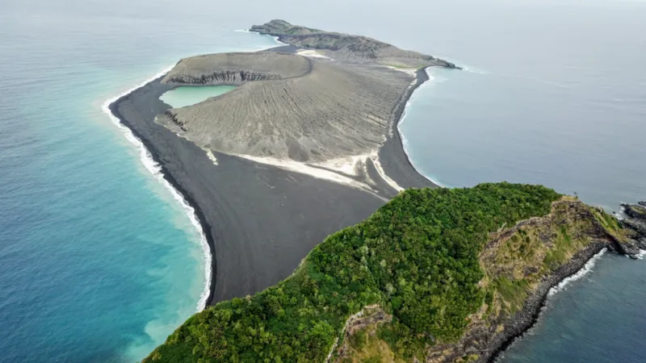

Top 6. Hunga Tonga–Hunga Haʻapai (2022)

Description
Hunga Tonga–Hunga Haʻapai is a submarine volcano in the South Pacific located about 30 km (19 mi) south of the submarine volcano of Fonuafoʻou and 65 km (40 mi) north of Tongatapu, Tonga's main island. It is part of the highly active Kermadec-Tonga subduction zone and its associated volcanic arc, which extends from New Zealand north-northeast to Fiji, and is formed by the subduction of the Pacific Plate under the Indo-Australian Plate. It lies about 100 km (62 mi) above an active seismic zone.
The volcano rises around 2,000 m from the seafloor and has a caldera which – on the eve of the 2022 eruption – was roughly 150 m below sea level and 4 km at its widest extent.The only major above-water part of the volcano are the twin uninhabited islands of Hunga Tonga and Hunga Haʻapai, which are respectively part of the northern and western rim of the caldera. As a result of the volcano's eruptive history, the islands existed as a single landmass from 2015 to 2022: they were merged by a volcanic cone in a VEI 2 volcanic eruption in 2014–2015, and were separated again by a more explosive eruption in 2022, which also reduced the islands in size.
History
On 16 March 2009, a submarine eruption near Hunga Tonga–Hunga Haʻapai began spewing steam, smoke, pumice, and ash thousands of feet into the sky. By 21 March, Tonga's chief geologist, Kelepi Mafi, reported lava and ash issuing from two vents – one on the uninhabited island Hunga Haʻapai and another about 100 m (330 ft) offshore. The eruption had filled the gap between the two vents, creating new land surface that measured hundreds of square metres. The eruption devastated Hunga Haʻapai, covering it in black ash and stripping it of vegetation and fauna.
The volcanic eruption drew worldwide attention. The volcano was featured in a segment of the television program Angry Planet in 2009